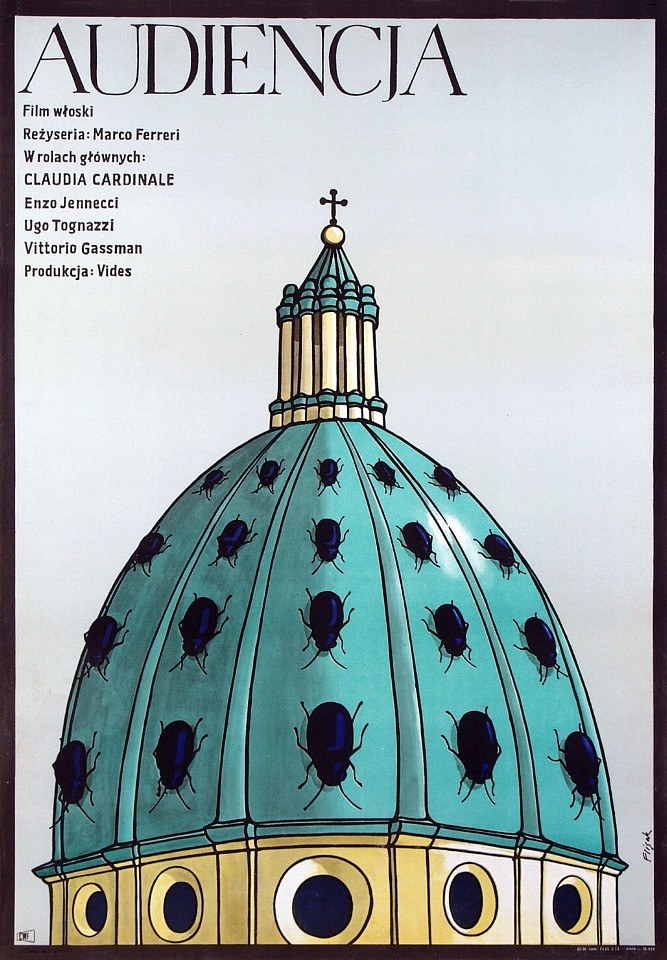

CRVI000254
Jerzy Flisak - The Audience
|||
Film Poster Designed By Jerzy Flisak · 1973 · 1973
info
close
←
→

#film poster designed by jerzy flisak
#Jerzy Flisak
#1970s
#Poland
#cyan
#blue
#alltags
source: polishposter.com ↗
rights & use